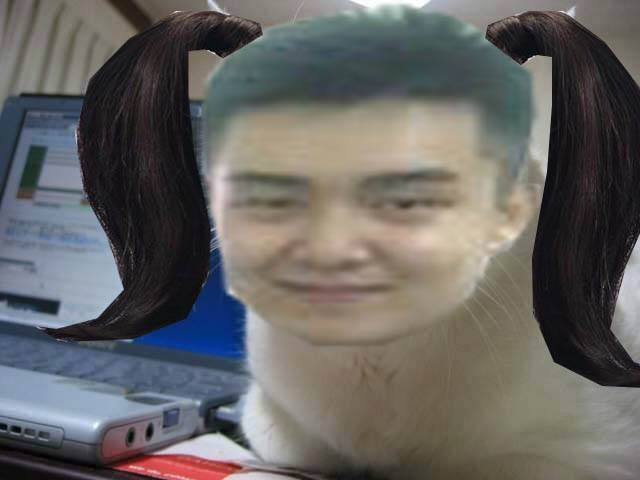

Lưu Minh Trung
Sinh ra trong 1 gia đình mèo đông anh em. Do bán kem trong hẻm nhỏ, ít khách qua lại, nên những ngày vắng khách, cả nhà phải ăn kem thay cơm nên cả nhà ai cũng trắng,tròn…. Sau một thời gian,cảm thấy việc trắng quá là không cần thiết,mèo cha quyết định dọn nhà ra mặt tiền. Từ khi di chuyển ra mặt phố, gia đình làm ăn phát đạt, mèo cha kinh doanh thêm sữa, mèo mẹ đi vắt sữa bò đem về bán, con bò già gầy yếu, bị ung thư vú, phải bị lạng bỏ mất 2 vú. Vài tháng sau, người ta phát hiện trong sữa có URGAY, gia đình phá sản.
Mất nguồn thu nhập, cả nhà lâm vào cảnh khó khăn, nợ nần, gia đình thiếu thốn, gầy rạc đi. Quyết không chịu khốn khổ,cả nhà cùng lên núi đi tìm phù thuỷ với mong muốn biến thành người. Sau khi gặp được phù thuỷ và trình bày nguyện vọng,hắn cười
-“Biến các ngươi thành người chưa từng là vấn đề! Nhưng liệu các ngươi có chấp nhận được hậu quả?”
-“Đừng hù! Chúng ta chẳng còn gì để mất!” –Mèo cha hét to.
-“Được thôi! Vậy hãy vào trong cái hang này, uống hết 5l sữa pha nước mắm, các ngươi sẽ thành người. Nên nhớ rằng không được thừa một giọt”
Cả gia đình mừng rỡ bước vào. Nhưng chỉ sau 1 ngụm đầu cả nhà gần như bỏ cuộc vì vị mặn của mắm, vị sữa như được vắt ra từ con bò già bị bệnh năm nào ngay trên đầu lưỡi,